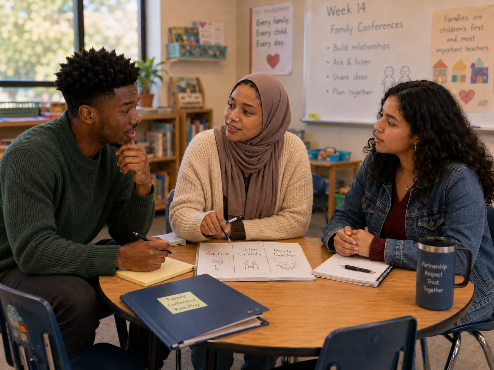

Informing or partnering?
🤝 Change the conference
Which opening most clearly establishes a collaborative family conference?
Moving from family communication to genuine collaboration

Jordan: “I’ll tell the family what I noticed, explain what they should do at home, then ask if they have questions.”
Aaliyah: “That sounds organized. But does it sound like partnership?”
Maya: “Maybe it sounds more like a report.”
Aaliyah: “Teachers have professional knowledge, but families know the child’s history, routines, culture, personality, fears, and strengths.”
Maya: “Partnership means communication, cooperation, and collaboration. Families aren’t visitors to our work—they’re part of it.”
Jordan rewrites his notes: Ask first. Listen carefully. Decide together.
Jordan: “Maybe I start with, ‘What are you seeing at home?’ or ‘What goals matter to your family?’”
Which opening most clearly establishes a collaborative family conference?
Choose the strongest description.
Which conference statement best combines professional evidence with family expertise?
A child is being raised by two grandparents. What is the strongest professional practice?
A family’s childrearing preference differs from the teacher’s but does not endanger the child. What should guide the response?
A teacher thinks a parent is “too permissive.” What is the strongest next step?
Which practice best creates an ongoing home–program connection?
A family and teacher interpret a child’s independence differently. What is the strongest response?
Which sequence best represents partnership?
Complete this sentence: Informing becomes partnering when…
Families belong at the center of work with children; their knowledge complements professional knowledge.
Did your response mention two-way communication, shared power, cultural respect, joint goals, or follow-through?
Collaboration grows through everyday relationship-building—not only conferences or moments of concern.